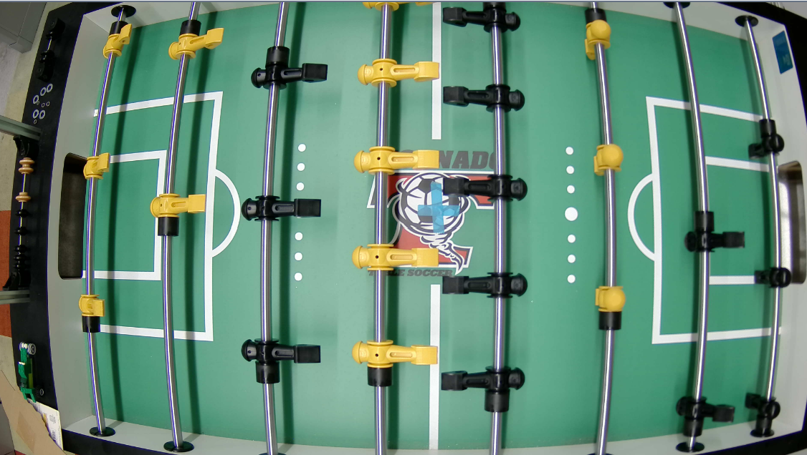
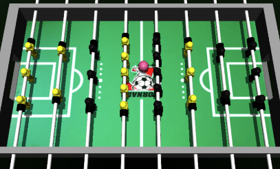
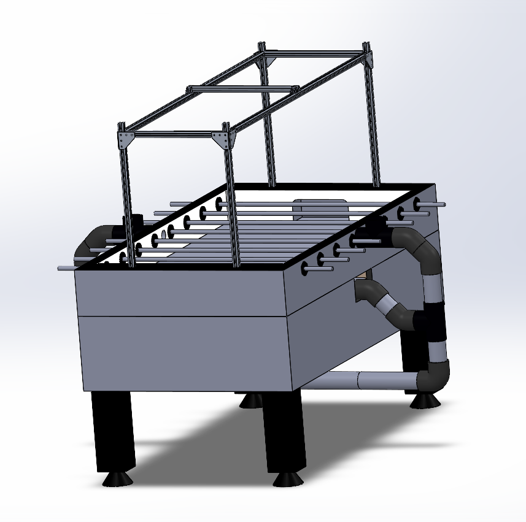

Columbia Creative Research Lab: Automated Foosball Table Mechanical Researcher

Foosball Camera View
Goal - Create an automated foosball table that is capable of playing Foosball using AI agents end to end without sensors to track the ball.
Tenure - 2024 to present
Role:
Undergraduate Researcher - Researcher responsible for designing and building the mechanical systems for the foosball table. Additionally, helping to implement algorithms for the AI agents.
Objectives:
Manufacture and build a foosball table robot capable of playing foosball at a human level.
Create simulated environment that can accurately reflect the factors in a foosball game.
Develop a better understanding of the limits of AI agents and what factors drive them.
Integrate high-speed, vision-based tracking systems and global-shutter camera technology to enable precise, real-time ball and rod state estimation without traditional sensors, providing accurate data for AI decision-making.
Tools & Technologies & Skills
CAD: SolidWorks.
Coding/Simulation: Python, Mujoco, NVIDIA Isaac Sim.
Skills/Developed: Understanding of how to develop a project from start to finish; researching skills on new topics; better understanding of part selection.
Contributions:
Mujoco Simulated Environment
Created a simulated environment for the foosball table, sticks, and ball using physics simulator Mujoco.
Tested and tuned physics attributes of the foosmen and foosball.
Used simulated environment to train AI agents in python by running iterations of scoring the ball.
Learned/Developed: Familiarity with simulated environments; Better understanding of Python and its libraries; Understanding of how AI agents operate; Proficiency in Github Version Control.

Foosball Simulated Environment
Full Foosball CAD
Modeled entire CAD of foosball table, foosball camera stand, ball reset mechanism and foosball mechanisms in Solidworks.
3D printed parts for reset mechanism and foosball playing mechanisms.
Helped select parts and materials to model in CAD and later adopted in build phase.
Learned/Developed: Proficiency in Solidworks; Proficiency in version control; Learned methods of mechanical design.

Foosball Table Full CAD
Full Foosball Build
Utilized 20x20 aluminum rail extrusions along with aluminum corner brackets to build stable camera stand on foosball table.